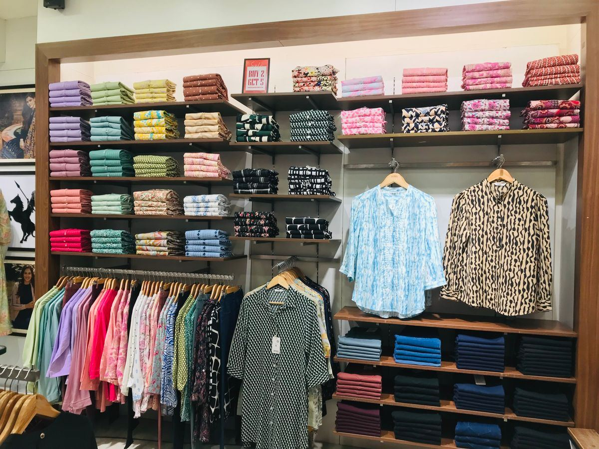

Lemari penuh tapi tiap pagi bingung mau pakai apa. Kalau itu kamu, ada kabar baik dari Meta. Perusahaan di balik Instagram dan Facebook itu diam-diam merilis aplikasi baru bernama Style Sketch, dan Indonesia jadi salah satu dari tiga negara pertama yang bisa mengunduhnya. Aplikasi ini gratis dan fungsinya sederhana: membantu kamu memadukan pakaian yang sudah kamu punya, tanpa harus beli baju baru. Per November 2026, aplikasi ini sudah tersedia di App Store dan Google Play Store untuk pengguna Indonesia.
Apa itu Style Sketch dan kenapa Indonesia kebagian duluan
Style Sketch adalah aplikasi fashion berbasis AI dari Meta. Cara kerjanya bukan menyuruh kamu belanja, melainkan membangun lemari pakaian digital dari baju yang sudah ada di lemarimu. Dari koleksi itu, AI menyarankan kombinasi outfit sesuai gaya pribadimu. Deskripsi aplikasinya di toko aplikasi bahkan menyebut pengguna tidak perlu membeli pakaian baru untuk membuat kombinasi outfit.
Yang bikin rilis ini menarik adalah kemunculannya yang diam-diam. Aplikasi ini muncul di toko aplikasi sekitar akhir Oktober 2026 dan pertama kali diketahui publik lewat konsultan media sosial Matt Navarra pada 28 Oktober 2026. Indonesia, Singapura, dan Thailand menjadi tiga negara pertama yang kebagian akses. Sampai artikel ini ditulis, Meta belum mengumumkan kapan aplikasi ini menyebar ke negara lain.
Buat kamu yang sering mengunggah foto outfit di Instagram, kabar ini dobel menarik. Style Sketch bisa terhubung dengan Instagram dan menyusun lemari digital dari foto yang pernah kamu unggah. Jadi kamu tidak perlu memotret seluruh isi lemari dari nol.

Fitur Style Sketch yang bisa kamu pakai gratis
Pertama, lemari pakaian digital. Kamu bisa membangunnya dengan dua cara: menghubungkan akun Instagram, atau memotret pakaianmu satu per satu. Kalau tidak mau menghubungkan Instagram, kamu tetap bisa memakai aplikasi ini dengan mengunggah foto dari galeri atau merekam video singkat pakaianmu.
Kedua, saran padu padan dari pakaian yang kamu punya. Kamu bisa memilih satu item tertentu, misalnya jaket yang jarang dipakai, lalu meminta AI mencarikan pasangan yang cocok. Ini berguna buat baju yang sebenarnya bagus tapi selama ini bingung dipadukan dengan apa.

Ketiga, virtual try-on. Kamu bisa melihat gambaran outfit pada model virtual yang disesuaikan dengan bentuk tubuh dan warna kulitmu. Jadi kamu bisa membayangkan hasil akhirnya sebelum benar-benar memakai bajunya.
Keempat, rekomendasi pakaian harian yang mempertimbangkan kondisi cuaca. Buat kamu yang sering salah kostum karena cuaca berubah, fitur ini lumayan membantu.
Kelima, perencanaan pakaian untuk liburan. Kamu tinggal memasukkan tujuan, durasi liburan, dan rencana aktivitas, lalu AI membantu menyusun kombinasi pakaian untuk setiap hari. Fitur ini juga membantu menentukan pakaian mana saja yang perlu dibawa, supaya koper tidak penuh dengan baju yang akhirnya tidak terpakai.
Ada juga inspirasi gaya dan opsi membagikan hasil kombinasi outfit kepada teman. Semua fitur ini gratis diunduh dan dipakai, menurut deskripsi aplikasi di toko aplikasi. Status gratis ini bisa berubah, jadi cek lagi halaman aplikasinya kalau kamu membaca artikel ini jauh sesudah November 2026.
Cara mulai pakai Style Sketch di HP kamu
Ikuti lima langkah ini:
- Cari "Style Sketch" di App Store atau Google Play Store, dan pastikan pengembangnya tertulis Meta Platforms, Inc. Jangan unduh aplikasi tiruan dengan nama mirip dari pengembang lain.
- Unduh dan buka aplikasinya, lalu masuk dengan akun Meta atau Instagram kamu.
- Bangun lemari digitalmu. Hubungkan akun Instagram, atau foto pakaianmu satu per satu dari galeri. Mulai dari baju yang paling sering kamu pakai, supaya saran AI langsung terasa relevan.
- Pilih satu item, misalnya jaket yang jarang dipakai, lalu minta AI mencarikan padu padannya. Simpan kombinasi yang kamu suka.
- Coba virtual try-on untuk kombinasi favoritmu, dan bagikan ke teman kalau kamu mau pendapat kedua sebelum memutuskan outfit besok pagi.
Ada dua syarat perangkat yang perlu kamu cek. Pengguna iPhone memerlukan iOS 18 atau versi lebih baru, dan aplikasi ini punya batas usia 18 tahun ke atas. Kabar baiknya, antarmuka aplikasi sudah mendukung bahasa Indonesia, jadi kamu tidak perlu pusing dengan menu berbahasa Inggris.
Sebelum menghubungkan Instagram, baca ini dulu
Style Sketch bekerja dengan foto pribadimu, jadi ada baiknya kamu memeriksa izin akses dan kebijakan privasi aplikasi sebelum menghubungkan akun media sosial. Kamu tidak wajib menghubungkan Instagram. Memotret pakaian sendiri memang lebih repot di awal, tapi itu pilihan yang tersedia kalau kamu mau menjaga foto pribadimu tetap terpisah.
Satu hal lagi yang jujur perlu disampaikan. Akurasi virtual try-on dan kualitas rekomendasi Style Sketch belum bisa dinilai tanpa pengujian langsung. Anggap sarannya sebagai inspirasi, bukan vonis. Selera dan kenyamanan tetap di tangan kamu. Kalau saran AI terasa aneh di badanmu, percaya saja sama cermin.
Keunggulan Meta ada di integrasinya dengan Instagram dan Facebook. Buat pengguna yang sudah sering membagikan foto pakaian di media sosial, membangun koleksi digital jadi jauh lebih cepat.
Intinya, Style Sketch cocok buat kamu yang lemarinya penuh tapi idenya mentok. Aplikasinya gratis, sudah tersedia di Indonesia, dan memakai baju yang sudah kamu punya. Unduh, isi lemarinya, dan coba satu kombinasi baru besok pagi. Siapa tahu jaket yang selama ini nganggur akhirnya punya pasangan yang cocok.
Sumber dan Info Resmi
Angka dan detail di artikel ini merujuk ke sumber berikut:
- Gizmologi: Style Sketch rilis diam-diam di App Store dan Google Play Store, Indonesia salah satu dari tiga negara pertama bersama Singapura dan Thailand, gratis diunduh, iPhone butuh iOS 18 atau lebih baru, batas usia 18 tahun ke atas, dukungan bahasa Indonesia, lemari digital dari foto Instagram atau dari memotret pakaian, video singkat, dan gambar galeri, virtual try-on dengan model virtual yang disesuaikan bentuk tubuh dan warna kulit, rekomendasi harian yang mempertimbangkan cuaca, perencanaan outfit liburan dari tujuan, durasi, dan rencana aktivitas.
- Jagat Review: Style Sketch gratis dan tersedia di iOS dan Android di Indonesia, Singapura, dan Thailand, dengan fitur saran padu padan dari pakaian di lemari pengguna, coba pakai virtual, dan perencanaan pakaian.
- Worldef: peluncuran sekitar 30 Oktober 2026, pertama kali diketahui publik lewat konsultan media sosial Matt Navarra pada 28 Oktober 2026, integrasi Instagram, rekomendasi outfit personal dan virtual try-on, serta deskripsi App Store yang menyebut layanan ini gratis dan pengguna tidak perlu membeli pakaian baru untuk membuat kombinasi outfit.
- Demokratis: Style Sketch sudah bisa ditemukan pengguna Android dan iPhone di Indonesia lewat Google Play Store dan Apple App Store, dan seluruh menu serta petunjuk bisa diakses dalam bahasa Indonesia.